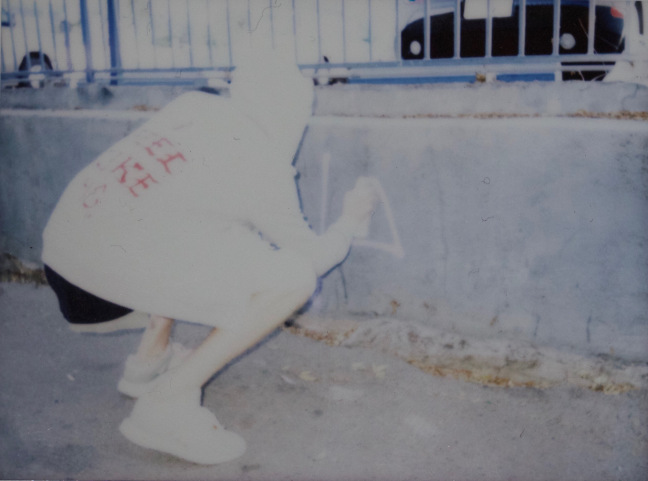
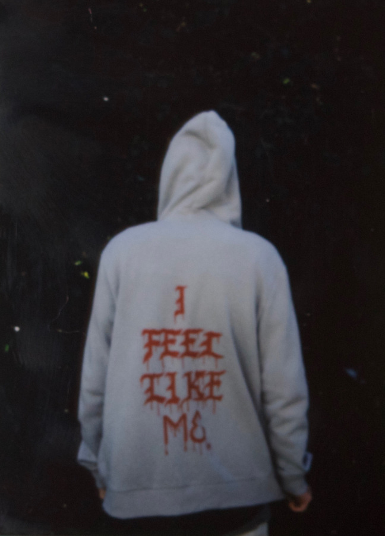

CULINARY M | MACKENZIEHEIDE
PORTRAIT
"Share your story here"; it said, so here's mine. I should start from the beginning, about how my mom and dad were driving to drop me off at the University of Wisconsin-Madison, the whole car ride I couldn't help but think to myself, What if?What If... I go to Madison and I fail? What If? I don't make my mom and dad proud? All these What If Moments started reoccurring in my mind. I'm in my own head at this point, then suddenly, I realize parents are giving me a hug goodbye, telling me they love me and I'm headed off to Madison...
I'm sitting in my dorm still thinking about these What If Moments?Now, I'm nervous because I told family and friends that I'm going to school for nursing, but I already know that's not what I'm meant to do. Mini failure that has me again thinking What If? what if I can't figure it out while I'm here, how do I explain that? I grab a Diet Coke, throw my headphones in and start exploring. I start thinking more about these What If Moments.
I'm jittery, so I spark a cigarette (nasty habit, I know) waiting for my roommate to come meet me outside the dining hall. I flick my cigarette out and hear "Mac!Mac!!" my friend has arrived with two of her roommates, they pull up and I get in, now the journey is here. Time to take on Madison... It's about 10:30 when we get back to their place, we small talk for a while because it's been over two years since we've seen each other last. It's about 12 o'clock now; everyone starts getting ready to hit the hay. I stay up for a little bit longer to soak in the moment, collect myself and again I start thinking about these What Ifpossibilities and pass out.
Rise and Shine (sort of) I'm up and ready by 10:30am about to start the first day of class. I map out plans and ideas for the day; I'm thrilled feeling like good things are to come. All day we got to go around the city and I was able to photograph a few things.
(Madison 2013) Photographed by Me

(Madison 2013) Photographed by Me
So after after another day of taking down the streets of Madison my roommate and I settle back at the dorm. We talked a lot specifically about success and putting yourself in places to succeed. By the end of my first week of classes I had found a job at a restaurant, got a business page up, and now I have a little platform. 3 years later I'm a college dropout with one of the most successful catering companies in the What If Moments came back to me, and I really started to think. Here's what I came up with...
What If Moments are or seem to be the way of testing you as a being. To feel successful you have to visualize that success to understand it, believe in yourself and believe in success. I want a chance, you want a chance, we all just want a chance. What will you do with that chance? Treat that opportunity as a step to becoming who you are supposed to be, or half-ass it and shrug it off when you fail. Doubts happen, but it's how move forward that matters. If you give up on something because of insecurities and fail tap into your potential, that's on you... You have to put yourself out there to be great. Some of your defeats have to be bigger than your victories; that"s how it goes. I went to Madison with a specific plan and life threw something totally different at me. Life was testing me. I didn't know how to handle it but I'm glad I was able to put myself out there and live out my small increment of time as a chef.
These What If'soften play in my head but if there was one thing that being at Madison taught me and it was a humbling experience) it's that if you're going out striving to be something great, as long as you're going 100% at it no one can look at you differently and no one can be disappointed. We often look at utopia's as short-lived and unhelpful, but they are helpful because they can be really self-enabling and set things up for the future. So strive for utopia and even if it turns out to be a dissapointment, someone out there will be inspired by your effort.

(I Feel Like Me) Photographed by Me